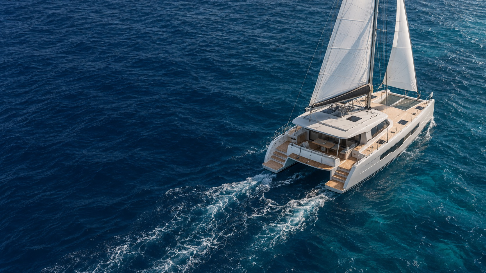

Private yacht charters
Your time
on the water.
A week under sail, mornings at anchor, and a different view from the deck each day.
Browse charter yachtsFind your kind of charter.
Start with who’s coming, where you’d like to sail, and how you want to spend your days aboard.
- The yacht
- A sailing catamaran gives your group room to spread out, with shaded seating and easy access to the water.
- The destination
- Think about the days you’d enjoy most, from swimming in quiet anchorages to walking ashore for dinner.
- The crew
- A skippered charter includes a skipper. A fully crewed charter can also include onboard meals and service.